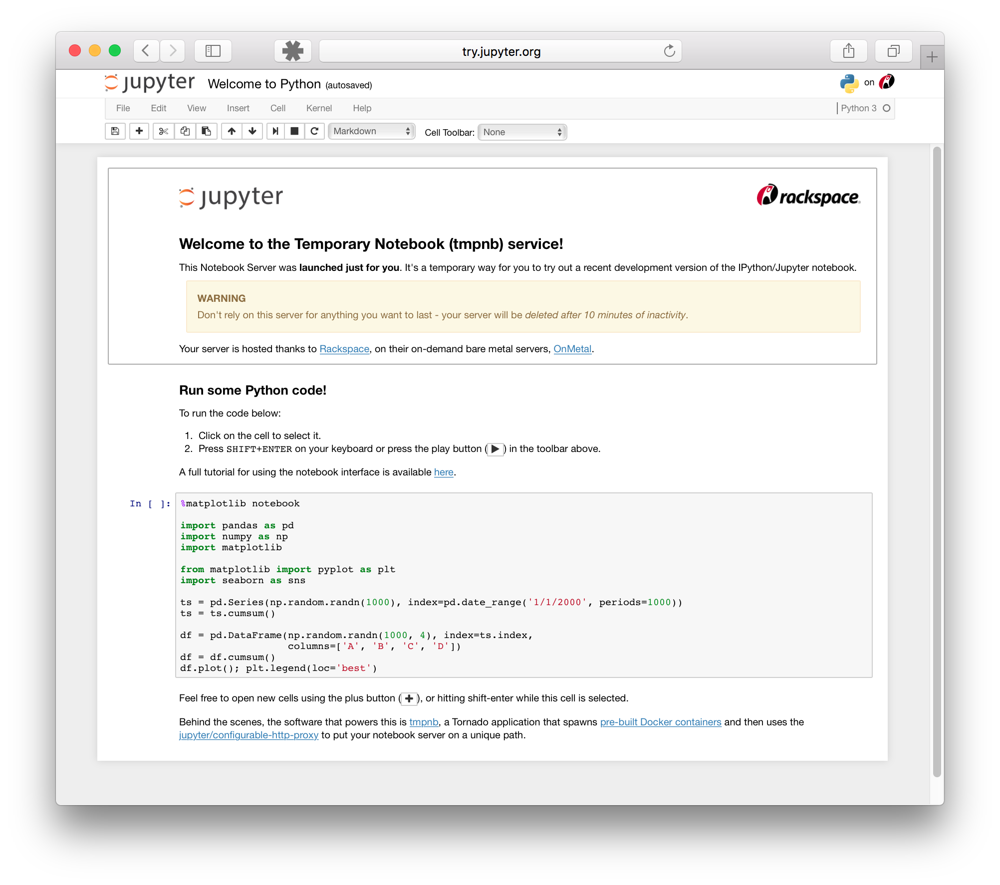
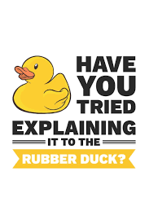

Using Project Jupyter
Contents
Using Project Jupyter#
The Classic Notebook interface#
The Classic Notebook interface is a document-oriented interface that allows you to create, view, and execute code in a Jupyter Notebook.
The example should look like this:
Notebook Dashboard

Notebook Editor

Try the JupyterLab interface#
The Jupyter Lab interface is a more extensible and composable interactive computing interface for more complex workflows.
Here’s an example of what the JupyterLab interface looks like:

Jupyter Lab Interface#
The best platform for this class (outside of computing restrictions) is JupyterLab. Many, if not all the features we will discuss are available in Google Colab.
JupyterLab is a next-generation web-based user interface for Project Jupyter.

JupyterLab enables you to work with documents and activities such as:
Jupyter notebooks
text editors
terminals
custom components
Here is a short video that rapidly goes over many of the cool features in Jupyter
from IPython.display import HTML
HTML(
'<iframe width="800" height="450" src="https://www.youtube.com/embed/A5YyoCKxEOU" title="How to Use JupyterLab" frameborder="0" allow="accelerometer; autoplay; clipboard-write; encrypted-media; gyroscope; picture-in-picture" allowfullscreen></iframe>'
)
C:\Users\jca92\.conda\envs\jupyterbook\lib\site-packages\IPython\core\display.py:419: UserWarning: Consider using IPython.display.IFrame instead
warnings.warn("Consider using IPython.display.IFrame instead")
Running Jupyter Lab#
Once you have Jupyter Lab installed you can spin up a Jupyter Lab with:
jupyter lab
Jupyter Notebooks#
Within Jupyer Lab you will primarily use Jupyter Notebooks. These are files with .ipynb extensions
Introduction#
Web based platform for developing, documenting, and executing code, as well as communicating the results
A web application: a browser-based tool for interactive authoring of documents which combine explanatory text, mathematics, computations and their rich media output.
Notebook documentation: a representation of all content visible in the web application, including inputs and outputs of the computations, explanatory text, mathematics, images, and rich media representations of objects.
Main Features of the Web Application#
In-browser editing for code, with automatic syntax highlighting, indentation, and tab completion/introspection.
The ability to execute code from the browser, with the results of computations attached to the code which generated them.
Displaying the result of computation using rich media representations, such as HTML, LaTeX, PNG, SVG, etc. For example, publication-quality figures rendered by the
matplotliblibrary, can be included inline.In-browser editing for rich text using the Markdown markup language, which can provide commentary for the code, is not limited to plain text.
Tab Complete#
If you start typing the name of a package, or an object you can press the tab button to discover what is available (twice) or complete the name
Importing packages#
import sklearn.cluster as cluster
Reading Documentation#
?? cluster.KMeans
Structure of Notebook Document#
Consists of a sequence of cells
Cells can be executed by pressing
shift + enter
Types of Cells#
Code Cells#
A code cell allows you to write new python code that can be executed on the kernel, generally this is python
from IPython.display import Image
Image(url="http://python.org/images/python-logo.gif")
Other examples can be seen at A Rich Output Example.
Markdown Cells#
These cells provide the ability to add sequential documentation to your code using simple style guides
Structure for document can be provided using
#or##You can include mathematical equations in LaTeX notation
$...$or$$...$$
\(e^{i\pi} + 1 = 0\) $\(e^x=\sum_{i=0}^\infty \frac{1}{i!}x^i\)$
Other examples can be seen at A Markdown Example
Raw Cells#
These are cells where you can write the output directly without it being evaluated by the notebook
Important Keyboard Shortcuts#
Shift + Enter - Run a cell
up/down arrows - move between cells
Enter - edit mode
Esc - command mode allows you to navigate using keyboard shortcuts
a- add cell aboveb- add cell belowc- copy cellv- paste celld, d- delete cellm- change cell to markdowny- change to code modeI, I- Interrupt kernel
Other examples can be seen at Jupyter Tricks.
Magic Functions#
Magic functions allow your IPython kernel to perform useful functions
Some useful magics:
%precision 4sets printed precision for floats to 4 decimal places%whosgives a list of variables and their values%quickrefgives a list of magics
The full list of magics is here.
Debugging#
“Debugging is twice as hard as writing the code in the first place. Therefore, if you write the code as cleverly as possible, you are, by definition, not smart enough to debug it.” – Brian Kernighan (Unix Creator)
Many early programers use print statements to help them
Then they might move on to adding verbose options
Really, it is best to use a debugger
How to Debug#
Rubber Duck Debugging#

The rubber duck debugging method is as follows:
Beg, borrow, steal, buy, fabricate or otherwise obtain a rubber duck (bathtub variety).
Place rubber duck on desk and inform it you are just going to go over some code with it, if that’s all right.
Explain to the duck what your code is supposed to do, and then go into detail and explain your code line by line.
At some point you will tell the duck what you are doing next and then realize that that is not in fact what you are actually doing. The duck will sit there serenely, happy in the knowledge that it has helped you on your way.
Note: In a pinch a coworker might be able to substitute for the duck, however, it is often preferred to confide mistakes to the duck instead of your coworker.
Original Credit: ~Andy from lists.ethernal.org
Debugging in Jupyter Notebooks#
Debugging is one of the major limitations of Jupyter Notebooks. The best way to debug is using the %debug magic command
Debugging Example#
%matplotlib inline
import numpy as np
import matplotlib.pyplot as plt
plt.rcParams['figure.figsize'] = (10,6)
def plot_log():
fig, ax = plt.subplots(2, 1)
x = np.linspace(1, 2, 10)
ax.plot(x, np.log(x))
plt.show()
plot_log() # Call the function, generate plot
---------------------------------------------------------------------------
AttributeError Traceback (most recent call last)
Input In [6], in <cell line: 7>()
4 ax.plot(x, np.log(x))
5 plt.show()
----> 7 plot_log()
Input In [6], in plot_log()
2 fig, ax = plt.subplots(2, 1)
3 x = np.linspace(1, 2, 10)
----> 4 ax.plot(x, np.log(x))
5 plt.show()
AttributeError: 'numpy.ndarray' object has no attribute 'plot'
This code is intended to plot the log function over the interval \( [1, 2] \).
But there’s an error here: plt.subplots(2, 1) should be just plt.subplots().
(The call plt.subplots(2, 1) returns a NumPy array containing two axes objects, suitable for having two subplots on the same figure)
The traceback shows that the error occurs at the method call ax.plot(x, np.log(x)).
The error occurs because we have mistakenly made ax a NumPy array, and a NumPy array has no plot method.
But let’s pretend that we don’t understand this for the moment.
We might suspect there’s something wrong with ax but when we try to investigate this object, we get the following exception:
ax
---------------------------------------------------------------------------
NameError Traceback (most recent call last)
Input In [7], in <cell line: 1>()
----> 1 ax
NameError: name 'ax' is not defined
The problem is that ax was defined inside plot_log(), and the name is
lost once that function terminates.
Now let’s use the %debug magic command
%debug
def plot_log():
fig, ax = plt.subplots(2, 1)
x = np.linspace(1, 2, 10)
ax.plot(x, np.log(x))
plt.show()
plot_log() # Call the function, generate plot
Now we see
ipdb>
You now have a breakpoint where you can look at the variables, for example:
/var/folders/kg/n0rbgr9525qgc4kkytjzh6xc0000gn/T/ipykernel_11121/4061873064.py(6)plot_log()
4 fig, ax = plt.subplots(2, 1)
5 x = np.linspace(1, 2, 10)
----> 6 ax.plot(x, np.log(x))
7 plt.show()
8
ipdb> ax
array([<AxesSubplot:>, <AxesSubplot:>], dtype=object)
ipdb> x
array([1. , 1.11111111, 1.22222222, 1.33333333, 1.44444444,
1.55555556, 1.66666667, 1.77777778, 1.88888889, 2. ])
Now, we can see that ax is a NumPy array of objects, AxesSubplot
To break out of the debugger you type exit()
Setting a Breakpoint#
Suppose we have a function that works but the results do not look as expected. We need to add a breakpoint to explore this.
def plot_log():
fig, ax = plt.subplots()
x = np.logspace(1, 2, 10)
ax.plot(x, np.log(x))
plt.show()
plot_log()
from IPython.core.debugger import set_trace
You can set a breakpoint by adding set_trace()
For executing line by line use
nFor step into a function use
sTo exit from debugging prompt use
c
%debug
def plot_log():
set_trace()
fig, ax = plt.subplots()
x = np.logspace(1, 2, 10)
ax.plot(x, np.log(x))
plt.show()
plot_log()
Debugging in Jupyter Lab#
You can debug in a much more user friendly way in JupyterLab